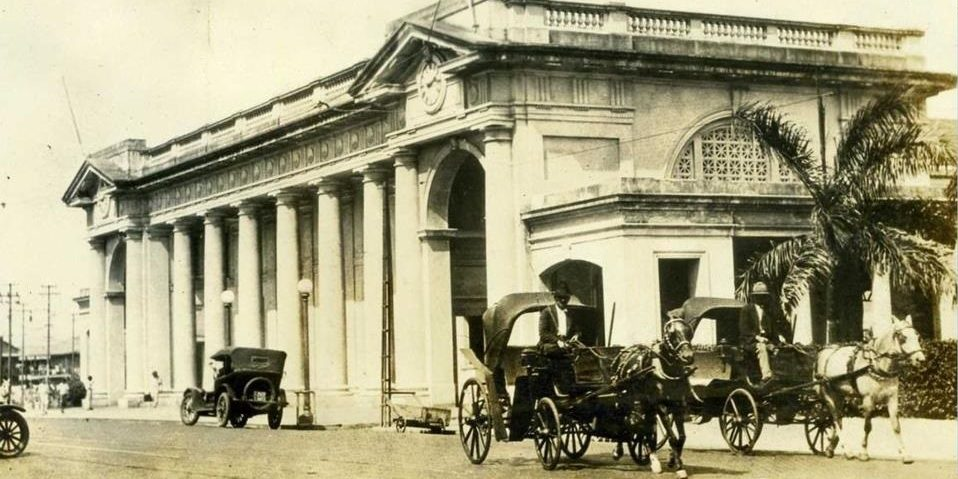
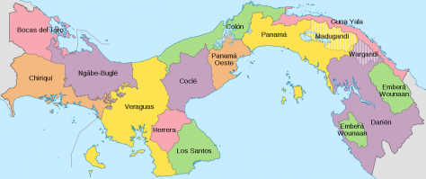

Debido a su posición geográfica única, Panamá tiene un patrimonio histórico abundante. Por cientos de años Panamá ha servido como un cruce tanto marítimo como también territorial. Fue cerca de la actual cuidad de Panamá que el conquistador español Vasco Núñez de Balboa fue el primer europeo en haber contemplado el Océano Pacifico. Cristóbal Colón también hizo visitas frecuentes para explorar las costas caribeñas del país. Incluso, Colón hizo el intento de establecer una colonia en el norte del país - Bocas de Toro. Más tarde en su historia, el Presidente norteamericano Teodoro Roosevelt llegó a Panamá para inspeccionar el progreso del Canal de Panamá. Para el Presidente, esta obra fue el logro más importante de su presidencia.
La República de Panamá es una gran franja ístmica con una superficie total de 75,845 km², y 2.210 km² de superficie de aguas territoriales, totalizando 77.626,7 km².
